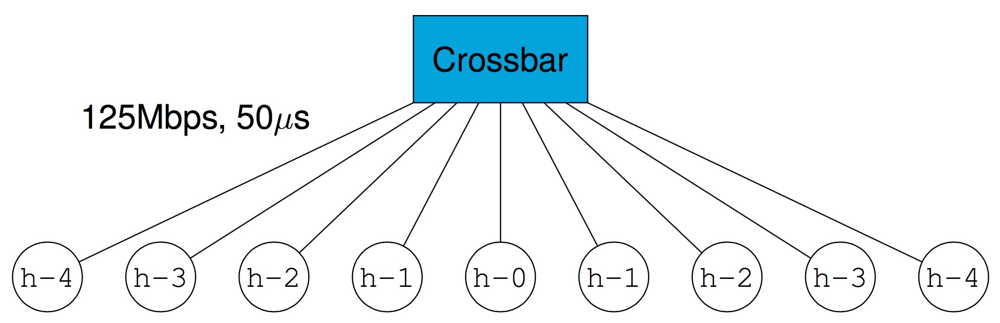
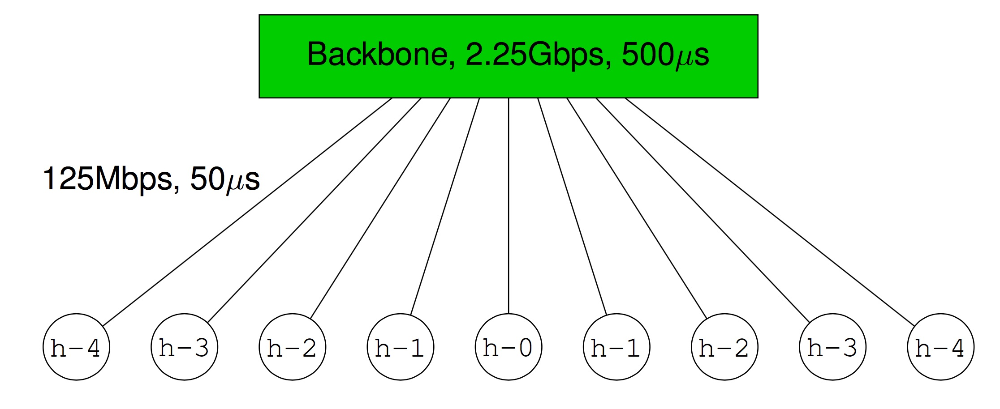

This topic focuses on getting you started with SMPI (Simulated MPI) so that you are ready for the modules in the next topics. Simply read through the 4 tabs below:
This CourseWare was tested with SimGrid version 3.13 (small changes may be needed with other versions).
On a recent Debian/Ubuntu (virtual) machine, you can retrieve SimGrid directly from the
package manager: sudo apt-get install simgrid
Do not forget to check that you obtained a sufficiently recent version, e.g., by doing apt-cache show libsimgrid-dev.
If the version you obtain this way is too old, we recommend you to manually install simgrid and to follow the instructions bellow.
For other systems, please refer to the Download page that have all the information you need. But just to be sure, here is a typical way to compile the version you want on a Linux (virtual) box:
sudo apt-get install g++ libboost-all-devtar -xvf SimGrid-x.x.x.tar.gzcd SimGrid-x.x.xcmake -DCMAKE_INSTALL_PREFIX=/usr/local -Denable_smpi=on -Denable_documentation=off/usr/local/)makemake checksudo make install
Assuming your path includes /usr/local/bin (which it should), you now can invoke two new
commands: smpicc and smpirun.
If you are not a superuser on your system, then you have to install SimGrid in your home directory, say in a directory
called local, with the modified cmake
invocation. The binaries are then available as
~/bin/smpicc and ~/bin/smpirun.
cmake -DCMAKE_INSTALL_PREFIX=$HOME/local/ -Denable_smpi=on -Denable_documentation=offSMPI simulates the execution of MPI applications by relying on the fast and accurate simulation core provided by SimGrid. The SMPI user (you!) must describe simulated platforms (i.e., sets of simulated hosts and network links, with some performance characteristics). The SimGrid documentation provides ample information on platform descriptions, which are written in XML. Below we simply show a series of examples, which should be sufficient for our purpose. Note that platform files are typically provided in each pedagogic module, but you may have to modify them.
A simple 3-host example: At the most basic level, you can describe your simulated platform as a graph of hosts and network links. For instance:

<?xml version='1.0'?>
<!DOCTYPE platform SYSTEM "http://simgrid.gforge.inria.fr/simgrid/simgrid.dtd">
<platform version="4.1">
<zone id="AS0" routing="Full">
<host id="host0" speed="1Gf"/>
<host id="host1" speed="2Gf"/>
<host id="host2" speed="40Gf"/>
<link id="link0" bandwidth="125MBps" latency="100us"/>
<link id="link1" bandwidth="50MBps" latency="150us"/>
<link id="link2" bandwidth="250MBps" latency="50us"/>
<route src="host0" dst="host1"><link_ctn id="link0"/><link_ctn id="link1"/></route>
<route src="host1" dst="host2"><link_ctn id="link1"/><link_ctn id="link2"/></route>
<route src="host0" dst="host2"><link_ctn id="link0"/><link_ctn id="link2"/></route>
</zone>
</platform>
In the above XML, note the way in which hosts, links, and routes are defined. Note that all hosts are defined
with a power (i.e., compute speed in Gflops), and links with a latency (in us)
and bandwidth (in Mbit/sec). Other units are possible and written as expected.
By default, routes are symmetrical. See more information on the
SimGrid Web site.
This XML file is intended for SimGrid v3.21 or earlier. To
use it with more recent versions, you may have to convert it using the
simgrid_update_xml program, as follows:
simgrid_update_xml 3_hosts.xmlA homogeneous cluster with a crossbar switch: A very common parallel computing platform is a homogeneous cluster in which hosts are interconnected via a crossbar switch with as many ports as hosts, so that any disjoint pairs of hosts can communicate concurrently at full speed. For instance:

<?xml version='1.0'?>
<!DOCTYPE platform SYSTEM "http://simgrid.gforge.inria.fr/simgrid/simgrid.dtd">
<platform version="4.1">
<zone id="AS0" routing="Full">
<cluster id="my_cluster" prefix="host-" suffix=".hawaii.edu" radical="0-255" speed="1Gf" bw="125Mbps" lat="5us"/>
</zone>
</platform>
In the above XML, note that one simply specifies a name prefix and suffix for each host, and then give an integer range (in the example the cluster contains 256 hosts). All hosts have the same power (1 Gflop/sec) and are connected to the switch via links with same latency (5 microseconds) and bandwidth (125 Mbit/sec). See more information on the SimGrid Web site.
A homogeneous cluster with a shared backbone: Another popular model for a parallel platform is that of a set of homogeneous hosts connected to a shared communication medium, a backbone, with some finite bandwidth capacity and on which communicating host pairs can experience contention. For instance:

<?xml version='1.0'?>
<!DOCTYPE platform SYSTEM "http://simgrid.gforge.inria.fr/simgrid/simgrid.dtd">
<platform version="4.1">
<zone id="AS0" routing="Full">
<cluster id="my_cluster" prefix="host−" suffix=".hawaii.edu" radical="0−255" speed="1Gf" bw="125Mbps" lat="50us" bb_bw="2.25Gbps" bb_lat="500us"/>
</zone>
</platform>
In the above XML, note that one specifies the latency and bandwidth of the link that connects a host to the backbone (in this example 50 microsec and 125 Mbit/sec), as well as the latency and bandwidth of the backbone itself (in this example 500 microsec and 2.25 Gbit/sec). See more information on the SimGrid Web site.
Two interconnected clusters: One can connect clusters together and in fact build simulated platforms hierarchically in arbitrary fashions. For instance:

<?xml version='1.0'?>
<!DOCTYPE platform SYSTEM "http://simgrid.gforge.inria.fr/simgrid/simgrid.dtd">
<platform version="4.1">
<zone id="AS0" routing="Full">
<cluster id="my_cluster_1" prefix="C1−" suffix=".hawaii.edu" radical="0−15" speed="1Gf" bw="125Mbps" lat="50us" bb_bw="2.25Gbps" bb_lat="500us" />
<cluster id="my_cluster_2" prefix="C2−" suffix=".hawaii.edu" radical="0−31" speed="2Gf" bw="125Mbps" lat="50us" />
<link id="internet_backbone" bandwidth="0.01Gbps" latency="22500us" />
<zoneRoute src="my_cluster_1" dst="my_cluster_2" gw_src="C1−my_cluster_1_router.hawaii.edu" gw_dst="C2−my_cluster_2_router.hawaii.edu" symmetrical="YES">
<link_ctn id="internet_backbone" />
</zoneRoute>
</zone>
</platform>
The above XML is a bit more involved. See all details and documentation on the SimGrid Web site.
We are now ready to simulate the execution of an MPI program using SMPI. Let us use the following simple
MPI program,
roundtrip.c, in which the processes pass around a message and
print the elpased time:
roundtrip.c...
#include <stdio.h>
#include <stdlib.h>
#include <mpi.h>
#define N (1024 * 1024 * 1)
int main(int argc, char *argv[])
{
int size, rank;
struct timeval start, end;
char hostname[256];
int hostname_len;
MPI_Init(&argc, &argv);
MPI_Comm_rank(MPI_COMM_WORLD, &rank);
MPI_Comm_size(MPI_COMM_WORLD, &size);
MPI_Get_processor_name(hostname,&hostname_len);
// Allocate a 10MiB buffer
char *buffer = malloc(sizeof(char) * N);
// Communicate along the ring
if (rank == 0) {
gettimeofday(&start,NULL);
printf("Rank %d (running on '%s'): sending the message rank %d\n",rank,hostname,1);
MPI_Send(buffer, N, MPI_BYTE, 1, 1, MPI_COMM_WORLD);
MPI_Recv(buffer, N, MPI_BYTE, size-1, 1, MPI_COMM_WORLD, MPI_STATUS_IGNORE);
printf("Rank %d (running on '%s'): received the message from rank %d\n",rank,hostname,size-1);
gettimeofday(&end,NULL);
printf("%f\n",(end.tv_sec*1000000.0 + end.tv_usec -
start.tv_sec*1000000.0 - start.tv_usec) / 1000000.0);
} else {
MPI_Recv(buffer, N, MPI_BYTE, rank-1, 1, MPI_COMM_WORLD, MPI_STATUS_IGNORE);
printf("Rank %d (running on '%s'): receive the message and sending it to rank %d\n",rank,hostname,(rank+1)%size);
MPI_Send(buffer, N, MPI_BYTE, (rank+1)%size, 1, MPI_COMM_WORLD);
}
MPI_Finalize();
return 0;
}
Say we want to simulate the execution of this program on a homogeneous cluster, such as the one we saw in the "XML Platforms" tab: cluster_crossbar.xml. We need an "MPI host file", that is a simple text file that lists all hosts on which we wish to start an MPI process: cluster_hostfile.txt.
Compiling the program is straightforward:
% smpicc -O4 roundtrip.c -o roundtripRunning (simulating) it using 16 hosts on the cluster is done as follows:
% smpirun -np 16 -hostfile ./cluster_hostfile.txt -platform ./cluster_crossbar.xml ./roundtrip-np 16 option, just like in regular MPI, specifies the number of MPI processes to use. -hostfile ./cluster_hostfile.txt option, just like in regular MPI, specifies the host file. -platform ./cluster_crossbar.xml option, which doesn't exist in regular MPI, specifies the platform configuration to be simulated. You will see some warnings/information regarding setting some SMPI configuration parameters. Ignore them for now. One of them will say something about not setting the power of the host running the simulation. This is fine here because in this small example we wish only to simulate the network.
Feel free to tweak the content of the XML platform file and the program to see the effect on the simulated execution time. Note that the simulation accounts for realistic network protocol effects and MPI implementation effects. As a result, you may see "unexpected behavior" like in the real world (e.g., sending a message 1 byte larger may lead to significant higher execution time).
SMPI is robust, but it still has some limitations, as listed (and further explained) below:
smpicc compiles your code, and is fairly robust. But if you go crazy with
tons of macros and C oddness, smpicc may get confused. It should happen only in rather extreme
cases, but you are now warned.